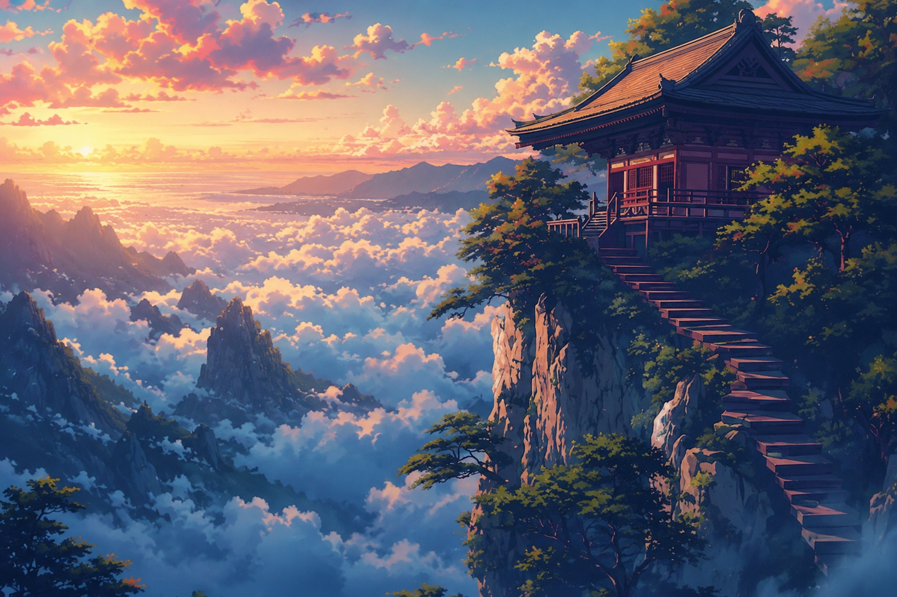
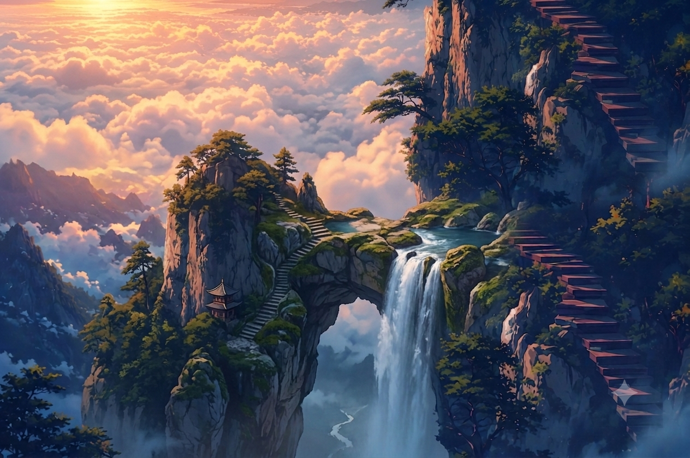
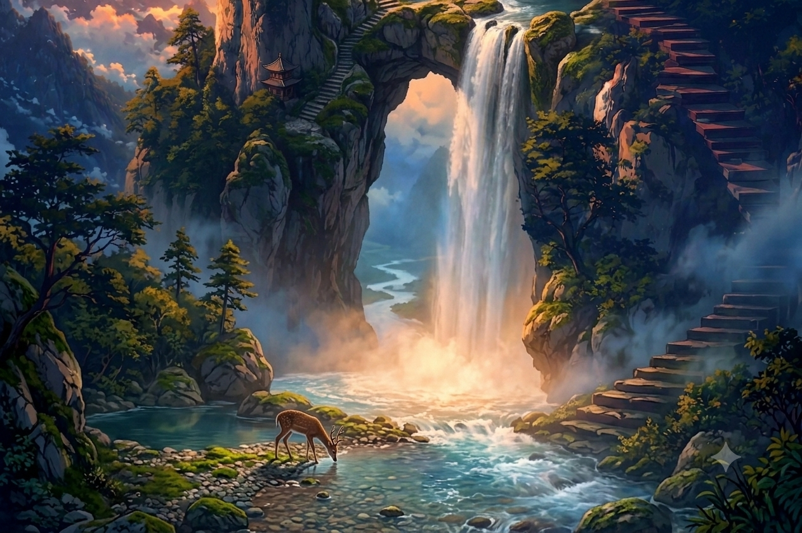

◆ Websites as a Service
YASHXDAKSH
We build sites that feel like a place, not a page — you start at the summit and simply keep scrolling into the world.

◆ 01 · Crafted Flow
Built to flow
Every section pours into the next like the falls — no jarring cuts, no pasted-on blocks. Just one continuous descent your visitors can’t stop following.

◆ 02 · Living Detail
Alive in the detail
Light, motion and atmosphere tuned by hand, down to the last mote of mist. The kind of craft that makes people trust a brand the moment they land.